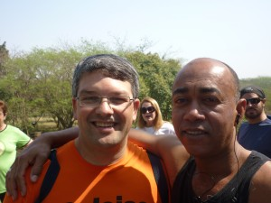
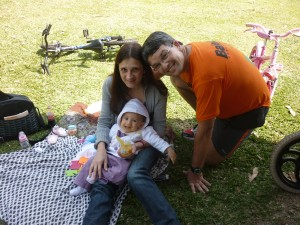
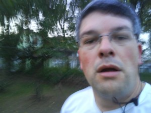
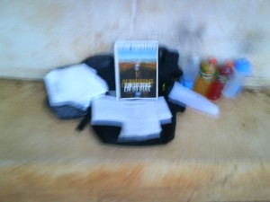
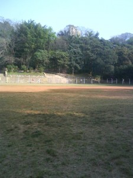
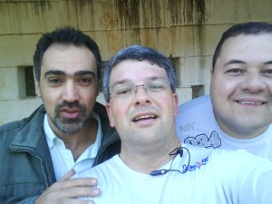
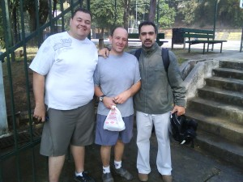
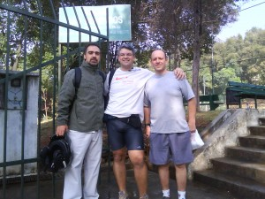

vamo, vamo, vamo…
Claudião
Advogado que mora em Pirituba City - São Paulo - SP
Home page: https://www.facebook.com/lucio.baleias
Posts by Claudião
Níver do Herói da Equipe – Super Thiago Zamith
57 years
by Claudião
in Ex-sedentário
Ainda há tempo.
Hoje é o dia do aniversário do Grande Thiago Zamith.
Ele é o meu herói e é referência para toda a equipe Ex-sedentario. Exemplo em todos os sentidos. De uma educação sem igual. Incansável incentivador. E não desiste nunca dos amigos. Comigo então ele é um Santo. São tantos altos e baixos e tanta choradeira, que só vendo a paciência. Seu lugar está garantido no Céu, Thiago.
Um pouco tímido e reservado para os padrões Dundísticos. Mas um amigo de verdade. Eu nunca vi tão eufórico como na Maratona de ontem.
Thiago, toda a felicidade e sucesso para você. Um cabra que merece e muito. E muito obrigado pelo amor ao esporte e aos amigos. Agradecimento que faço em nome de toda família Ex-sedentário.
Foi um amigo que ganhei em razão deste blog e que levarei para o resto da vida.
Eu queria mais
47 years
by Claudião
in Ex-sedentário
Terei um dia cheio de compromissos. E amanhã, então… um mega compromisso. Comecei a correr as 05:20 aqui em Pirituba. Acho que o corpo deve ter sabido que era sábado, porque queria continuar com o movimento. Só parei porque tinha de levar a Mari na escola antes das 07:00 horas.
Corri leve e gostoso por 12,5km em 01H24Min46Seg.
Treinando e cumprindo o castigo
67 years
by Claudião
in Ex-sedentário
Estou aqui escrevendo bem mariquinha. Afinal, não fui bravo como o Alex. Sucumbi diante da Coca Zero e tenho como nota um ZERO! Zero de determinação. Você vai longe Alecão e a São Silvestre lhe aguarda meu amigo.
Hoje eu corri 1okm e me estabaquei no chão duas vezes.
Longãofesta (do Claudião) – Cumprindo o castigo.
107 years
by Claudião
in Ex-sedentário
Ninguém é perfeito.
Continuação do Longãoterapia
O Paulo Motta. Eu notei um defeito dele no sábado. Ele mente para ver um amigo feliz. E o Thiago, bem, revelou o mesmo defeito ao não desmentir o Paulo, por também desejar ver a felicidade do Claudião. Não sei o que fazer mais com esses dois.
Eu confio mesmo no meu reloginho meia-boca. Segundo o meu relognho meia-boca eu trotei sem parar 03h35min. Isso é verdade. E quando ele zerou, aquele apito irritante foi música para os meus ouvidos. Música com a qual dancei na raia olímpica, fazendo até aviãozinho de felicidade. Que delícia Gente. Se alguém estiver protelando começar os treinos longos, faça-os já. Quando o apito finalmente parou dei um sprint em direção ao ponto de início, onde minha mochila me aguardava. Delícia.
Essa é a verdade, meus amigos. Ah, também é verdade que coloquei em prática meu plano da semana, que era ir correndo pra USP desde a estação de trem Domingos de Moraes. De onde parti as 05:05horas, seguindo a Barão de Jundiaí. Subindo a Pio XI, seguida da queda livre de 1km da São Gualter. Até me dei ao luxo de parar quando cheguei na USP. Travei o timer e tomei uma garrafa de isotônico enquanto Paulo e o Thiago se preparavam para o grande passeio. O Paulo e o Thiago para ajudar a este gordo que corre fizeram simplesmente com que rodássemos 20km sem passar pela raia olímpica. Da qual não gosto e perco a motivação quando passo pela segunda vez.
Só para me deixar feliz, disse o Paulo que corri 27km. Mas ele só me disse isso para me deixar feliz mesmo. Deve ter dado menos, com certeza. Mas da próxima vez que eu for para USP será para tentar encarar meus primeiros 30km num treino.
EU VOU!!!!!!
EM TEMPO: Alecão e eu fizemos um pacto de não beber cerveja e refrigerante de qualquer espécie até 19 de setembro. Em homenagem ao esforço do Alecão. Estou aqui pagando o castigo que é o de colocar três posts seguidos em cor-de-rosa, e mais qualquer penduricalho que a Ana Shibata quiser colocar. Parabéns pelo esforço Aleção. Sucumbi a coca zero. E como já tinha quebrado a promessa mesmo, tomei cerveja também.
Claudio em fatos 2
67 years
by Claudião
in Ex-sedentário
Nome: Claudio … Dundes
Tempo parado: 24 horas.
Sexta-feira 10.09.2010
Peso: 101,5 quilos
Treino: 2,5km em 30Min – Da Avó Lola até a academais
Inspiração do dia: foco no objetivo de aumentar a rodagem ao longo da semana (seg a sex)
Percepção de esforço: fácil, facinho
Estado emocional: 10 (estou feliz)
PS: Estou devendo o post sobre o melhor treino que faz fiz, que foi o do último sábado na USP. Acompanhei o Paulo e o Thiago por subidas e descidas, bricando de dar voltas na USP sem passar pela enfandonha raia olímpica. Delícia de treino. Quando parei. Travou tudo. Caminhei com dificuldade até o carro. Dor intensa, mas aquela muscular pós esforço. Depois de meia hora não havia mais dor. Só o orgulho do meu treino. E um sorriso bobo na cara que durou o resto do dia. OBRIGADO THIAGO E PAULO PELO PASSEIO!!!!!!!!!!!!!!!!!!!!!
Se eu dormi bem, que mal que tem
57 years
by Claudião
in Ex-sedentário
De terça para quarta eu dormi por 8 horas seguidas. Fazia muito tempo que não dormia tanto. Levantei com dificuldade da cama. O corpo não reagiu dispostamente após tudo isso de cama. Soninho gostoso que venho tendo desde novembro.
Hoje:
03:45, pulo da cama para atender o telefone da sala. Volto correndo para desligar o celular que tocava às 03:49; 04:10, já na Mutinga solto o timer em 01h10min. A rua é só minha e está fazendo menos frio do que supus que estivesse. Espírito forte rodei gostoso. Faltando 8 minutos para zerar o timer eu caminho numa subida. Mais um pique e o timer apta. Dali até em casa foram mais 3 minutos; 05:20, acordo a Mari, faço café, troco a camiseta molhada, visto a jaqueta, boto o lixo pra fora, deixo o portão aberto; 06:05, saímos em direção á avó Lola; 06:20, coloco o Henrique junto da avó Lola na cama. Como uma banana; 06:42, Mari segue para o trabalho eu tenho de caminhar para chegar até a academia; 07:06, chego na academia; 07:30, saio da academia depois de treinado pernas; 08:10, estou de volta na Mutinga, no ponto de ônibus em direção ao trem.
Se eu dormi bem, que mal que tem.
Encontro no Parque. Festa de amigos. Meu aniversário
137 years
by Claudião
in Ex-sedentário
Nunca demorei tanto para postar no blog qualquer acontecimento de corrida. Mas desta vez eu travei. Emoção demais também nos trava. Os últimos dias se passaram de forma totalmente diferente. Fiquei meio aéreo, literalmente abobalhado. Por vezes, peguei-me pensando se tudo não passou de um lindo sonho.
Sobre o encontro/festa do último domingo eu escreveria um livro. Então, o que pinçar? A solução eu encontrei no Blog da Dona D. Hoje grande amiga e Baleias, Equipe da qual sou parceiro de coração, coração este que tem lugar de sobra para ser Chefe de Torcida desta maravilhosa equipe Ex-sedentário e mais uns treinos legitimamente 100 Juízo.
Tudo começou com o necessário agendamento de data para encontro dos membros da Equipe Ex-sendentário que participará, com oito integrantes, da Maratona de Revezamento Pâo de Açucar, no próximo dia 19.
Eu já estava muito feliz de juntar tantos amigos especiais para a prova de revezamento, mas ainda não estava suficientemente bom. Consultando as bases (amada esposa) e contando com o apoio da minha mãe, que antecipou a viagem dela em 10 dias, especialmente para o evento, resolvemos então que seria também uma comemoração do meu aniversário, com direito a bolo integral de milho da Tia Toninha (minha mãe) que tanto amo.
Tudo aconteceu de forma ainda mais perfeita do que havia imaginado. E olha que o Claudião viaja quando se empolga.
No encontro só tinha amigos. E fica aqui o meu agradecimento a Dona D. que nunca tinha me visto mais gordo e, na maior confiança, foi de espírito e coração abertos, levando com ela sua linda família. Dona D (que não é Dundes), você já mora aqui no meu coração.
Como estou falando do meu dia, todos vibraram comigo uma alegria de pai. Aliás, nossa alegria de pais, não é mesmo Alecão, porque neste dia Henrique e Mauricio andaram de bicicleta sem as rodinhas.


Chegamos (Mari, Henrique e Dona Lola) no Parque as 09:00 horas, no mesmo horário também chegaram Alecão (e família), Samuca e Thiago, com a Paula. Todos eles se dirigiram para o quiosque e eu fiquei na expectativa da chegada dos demais. Não demorou chegou a Monica Otero, minha mãe, irmã e sobrinha. Em seguida o Baleias e Enio Yuhara, a Familia inteira da Ana Shibata e nosso mais novo membro da equipe Ex-sedentário, Seu Pedro Rios com sua esposa Sueli.
E nada da Dona D. Pensei que ela não fosse. Pensei até que ela não viesse mais. Começou então a sessão de fotos.

Obrigado Monica, você é um anjo. Um dia ainda farei parte de sua equipe de apoio na Badwater.

O Enio eu posso considerar um presente do Miguel Delgado, porque é amigo, é parceiro, é sensacional.

Aqui estou entre o meu mentor, incansável incentivador que nunca desiste de mim: Thiago Zamithi e o Alecão, que dispensa comentário: é parte de mim, a parte quieta e reservada, mas é.

Estou entre Seu Pedro, nosso mais novo membro da Equipe Ex-sedentario que correrá também a Maratona de Revezamento (com sua esposa) e minha linda e atlética mãezinha. Seu Pedro é a simpatia em pessoa. E é o meu orgulho da equipe. Ver tanta gente se divertindo junto e fazendo atividade física não tem preço. Você é o nosso tesouro Seu Pedro.

Quando eu achei que não chegaria mais ninguém, eis que me chega o Grande Fábio Namiuti com a Janete. Grande parceiro e Amigo Fábio Namiuti, o laço que já era forte, estreito fica ainda melhor. Valeu amigão.
As fotografias não tiveram um sequencia lógica, porque o Claudião emocionado fica sem qualquer resquício de logicidade em seus atos. Eu estava era surtado de felicidade. Por esse grave defeitto as fotografias da minha grande parceira Ana Shibata e sua maravilhosa família estará entremeada nas demais. Simplesmente imperdoável. Diga-se, para registrar, que a Ana Shibata foi fundamental para o sucesso do encontro. Ela que escolheu o lugar apropriado, deu dicas de melhor bebida para acompanhar os bolos etc. Prova viva de que esse foi apenas o primeiro de muitos encontros de corredores. Não é mesmo Ana?
É. A Donda D. não veio mesmo, eu pensei. Seguindo o festejo e meu estado de pleno regogizo, partimos para um bacana passeio pelo Parque Villa-Lobos. Ana Shibata e o Samuel ficaram frustrados por não ter tido corrida. Mas nas nuvens (onde eu estava me sentindo naquele momento) eu não consigo correr, então desencanei totalmente.


O casal logo ao lado da Monica é o Ygor e Ana Amélia (norinho e filha da Ana Shibata). O Ygor com seu visual todo estiloso é uma simpatia. Atencioso com todos e disposto a ajudar no que for preciso. Valeu amigo. Ana Amélia reforçou para mim a promessa de subir todo o mês a Pedra Grande, sempre reduzindo o tempo. Sejam bem-vindos à equipe Ex-sedentário. Arrazaremos na Maratona de Revezamento.

O Parque é público e estava bem cheio, mas literalmente monopolizamos uma trilha suspensa de madeira, por onde se observa a espécimes de árvores que existem lá. E pensar que até pouco tempo o Villa-Lobos era conhecido como o Parque sem árvores.


Se eu estava feliz?
Deusolivre piá!
Feliz demais da conta!
Barbaridade!
Literalmente feliz como gordo de camisa (Baleias) nova.

O Samuca é um grande amigo. Que algum tempo atrás fazia parte daquelas histórias de velho chato (porque no tempo que eu era novo e disposto eu pedalava com o Samuel lá na Estrada Velha de Santos). Taí, vida nova, resgatando bons momentos com amigos verdadeiros. Hoje o Samuel é um membro da Equipe Ex-sedentário e parceiro de muitas novas corridas. Isso é a realização de um sonho.
E o passeio prosseguia. Sempre com uma interação entre os amigos que era um regalo para os meus olhos. Ver amigos do peito se tornando amigos entre eles é algo que chega a doer no peito. É felicidade demais.

Um dia eu hei de correr ao menos na rabeira desses meus heróis: Fabio Namiuti e Thiago Zamith

Olhem só do que estou falando. Ana Shibata e Monica Otero, amigas de longa data. E dá para não se emocionar com isso?

De volta ao QG (Quiosque Gordo) onde aconteceria finalmente a comilança, eu já completamente zureta de emoção, chega uma moça e com a mão no meu ombro vai logo dizendo: – Claudio, eu sou a Dona D! Não acreditei! Sim, ela estava ali, conosco. Perdeu o passeio, mas estava ali, na minha festa de amigos. Que prazer! Que figura! Acontecia ali, naquele exato momento, o encontro Baleias de São Paulo.
A surpresa foi que a Dona D chegou chegando, tomando o lugar dela de melhor amiga dos meus amigos e do Gordo que relata este encontro. Eu endoidei de vez nessa hora.
Mas essa não foi a única supresa do dia. Deus havia me reservado ainda mais. Encontrei, por acaso, no parque o Gilberto. Meu primeiro parceiro de corridas. Em 2003, fizemos a Maratona de Revezamento Pão de Açucar em dupla. Foram os primeiros 21 km de ambos. Emoção pura. Ele apareceu no quiosque e me disse que tinha engordado. Foi quando percebi que precisaremos de três meses reclusos para colocar toda a conversa em dia. Trocamos telefone e promessas de novas corridas. Detalhe: não nos encontrávamos desde aquele feito. E uma fotografia para registrar, lógico.

Não faltava mais nada. Quer dizer, faltava sim. Eu já estava com uma fome e uma sede Baleias. E seguiu a Valsa.


Esperem! Por favor, reparem nesta fotografia acima. Olhem esse sorriso da Dona D e do marido dela. Este é o melhor presente que poderiam ter me dado nesse dia. Não tem mais jeito. Eu os amo desde sempre agora. A Dona D (acho que é Dundes sim).

Minha amada irmã Ana e minha sobrinha Laura.

Meu amor cuidando de tudo. Amo você demais Mari.

Familia Shibata. Todos corredores. Só faltou a Silvinha.

Nesta foto, estavamos transmitindo em tempo real energia positiva para a Maratona das Praias da Elis. E não foi que ela ganhou troféu. Segunda colocada na categoria. Parabéns Elis. Nova e definitiva amiga.
Foi um encontro maravilhoso, as fotografias transmitem essa alegria que foi esse encontro. O primeiro de muitos outros que estão por vir. Nos próximos haverá mais corredores, com certeza. E dá-lhe celebração da amizade.

Dois membros efetivos da equipe Ex-sedentário não puderam ir: o Fábio Japa e o Luciano. Mas são guerreios, são amigos e farão parte da grande festa que será nossa corrida no próximo dia 19.
Treinando o psicológico (mas com apoio dos amigos)
97 years
by Claudião
in Ex-sedentário
Inspirado pela prova que o Paulo Motta ia fazer no mesmo final de semana (III Ultramaratona Rio 24 horas) resolvi executar um treino em microcircuito, para trabalhar o pisicológico.
Fiquei a semana inteira planejando o treino. A idéia era buscar forças para continuar rodando com o pensamento nos atletas que ficariam 24 horas rodando numa pista de atletismo. Mas só isso não seria o suficiente. Não para mim. Avisei alguns amigos que faria um treinamento de comemoração ao aniversário de 1 ano cuidando da apinéia do sono através da corrida.
A princípio o Fábio Japa também faria o treino dele de 1 hora na última parte do meu treino. Inclusive deixei com ele duas garrafas de gatorades para que ele as levasse geladas. Além dele também havia escalado o Edi para correr comigo a primeira 1/2 hora de treino.
O treino.
No sábado, então, as 04:45 horas, levantei. Liguei para o Edi, arrumei minha mochila com tudo que precisava e saí. Nem tinha chegado no portão o celular toca: era o Fábio Japa dizendo que não ia mais, porque acabara de receber, naquele instante, notícia de falecimento de um tio. Ele até saiu ao portão para entregar-me os isotônicos. Dei um abraço no amigo e segui na caminhada para encontrar o Edi. Mas não o encontrei. Incrível mas nos desecontramos. Fui até a casa dele e já tinha saído e não o vi pelo caminho.
Parti então para o Parque São Domingos. Caminhada de 50 minutos com a mochila pesada. Cheguei a ficar irritado por não conseguir chegar no horário que havia planejado (06:00 horas, quando abre o Parque). Mas respirei fundo e repeti para mim mesmo que aquilo eram apenas percalços para testar minha perseverança.
Dentro do campinho havia um local onde eu pude armar um altarzinho, digamos assim, no banco de concreto, coberto, arrumei lado a lado uma toalhinha, o livro do Dean Karnazes e as garrafas com minha hidratação.
Às 06:30 eu iniciei o treino, O plano era mudar o sentido a cada 15 voltas. Já na volta de número 30 eu senti um grande desgaste, ali, sozinho. Já estava cansado do percurso e faltavam ainda muitas voltas.
Fiquei puxando tudo que foi mantra e rezas para persistir. Com 1 hora de treino apareceu o Lau, grande amigo, com uma garrafa térmica (pequena) com café quentinho. Foi emocionante. Dei um grande berro de felicidade. Tomei dois grandes goles de café sem parar o trote e segui revigorado. O Lau deixou o café comigo desejou-me forças e prometeu voltar as 09:00 horas. Durante algum tempo as voltas se seguiram muito bem. Eu estava forte e ainda muito convicto.
Com duas horas, ou pouco mais, de treino apareceu o Malcon, grande amigo e incentivador, que sempre faz questão de dizer que se sente feliz por me ver cuidando da Saúde. Ele deu um voltinha trotando comigo e não arredou o pé até o fim do treino. Depois apareceu mais um amigo o Marcos Lara. Eu já estava emocionado aquela altura.
Nesse estágio do treino os amigos molhavam a tolhinha com água gelada para que pudesse colocar na cabeça. O que dava uma grande alívio para a respiração, dada a baixa umidade do ar.
Para engrossar o coro apareceu o Lau novamente e as últimas dez voltas havia gritos e aplausos dos meus amigos.
Com 03Horas06Minutos eu encerrei o treino. Foram 102 voltas de 230 metros cada. Total de 23km. Para quem me conhece sabe que eu fiquei feliz, satisfeito. Literalmente eu berrei de agradecimento aos meus amigos.
Eu estava muito feliz por ter tido aquele apoio. Realmente, que tem amigos consegue tudo. Sozinho eu teria sucumbido com 45 voltas. O calor de uma amizade, aquele café com sabor de carinho, os incentivos, os sorrisos. Tudo isso nos faz persistir. Só não pode se emocionar demais. Duas vezes eu quase parei e não foi por cansaço. Emoção, se for demais, também nos faz parar.

Com essa cara na segunda volta?!

Isto não é trabalho ruim, viu gente.



O que é um pontinho branco no canto do campo?


Malcon e Marcos Lara. Ficaram por 1 hora lá na beira do campo.

Quando encerrei o treino

Marcos Lara, Lau e Malcon. Vocês foram demais. Não tenho como agradecer.

O Malcon não gostou da bermuda, inclusive meu deu uma de presente a noite, segundo ele: uma de homem.

Grande Marcos Lara – Grande amigo.

Local do treino.
Grande dia, grande treino. Valeu pela experiência. Lembrei-me muito da Mayumi, que faz treino deste tipo sem apoio algum. Parabéns guerreira.

Ufa!
127 years
by Claudião
in Ex-sedentário
Corri. Desta vez não paguei o mico da semana passada. Agora são 23:19 horas. Corri os 4km que havia prometido correr. Correr de terno custa caro e só disse que ia fazê-lo em último caso. E, por sorte, não precisei disto. Devo confessar que não estava lá muito animado, não. Ia em razão da promessa. Mas me animei quando vi a bermuda ultra-fashion-nasa-plus-master que a Mari-Meu amor me deu. Daí então eu saí todo faceiro. Como todo gordo quando ganha roupa nova.
Mas emagrecer que é bom, nada.
Já frustrante constatar que em 14 dias de dieta, a única coisa que perdi foram duas semanas. Não diminui nenhum quilo. Sint-me bem, e vou procurar me conformar. Cheguei de volta do treino as 22:40. O telefone toca e é o Edi, meu amigo, dizendo para ir até o Bar dele que era aniversário da Dona Maria. Advinhem. Comi um pedaço de bolo de aniversário daqueles bem melecados. E ainda venho no blog prometer que vou voltar a ver apenas dois dígitos na balança. É ver para crer. Mas EU CORRI!!!!
.jpg "DSC01708 (1024x576)")
.jpg "DSC01717 (1024x576)")
.jpg "DSC01769 (1024x576)")
.jpg "DSC01876 (1024x576)")
.jpg "DSC01877 (1024x576)")
.jpg "DSC01878 (1024x576)")
.jpg "DSC01888 (1024x576)")


Últimos comentários